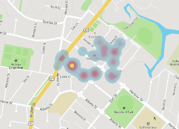
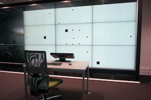
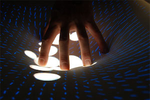

Fabian Göbel
Dipl. Media Computer Scientist
Since February 2016 I am a doctorate student at the GeoGazeLab at the ETH Zürich, Swizerland. My research is focused on Eye Tracking and Implicit Interface Adaptions. In 2015 I received my Diploma Degree in Media Computer Science at the Interactive Media Lab at the Dresden University of Technology.
Research Projects
Intention-Aware Gaze-Based Assistance on Maps (IGAMaps)
Adaptive human computer interfaces can significantly facilitate the interaction with digital maps in application scenarios such as navigation, information search, and for users with physical limitations. A map system that is able to recognize its user’s information requirements fast and accurately could adapt the map content, thus increasing effectiveness and efficiency of interaction. Since maps are primarily perceived and explored with the visual sense, it is plausible to assume that a user’s gaze on a map can be used to recognize intentions and activities, which can then trigger map adaptation.The main goal of this research project consists in the investigation of methods for the recognition of activities and intentions from visual attention during the interaction with maps. The project tries to answer the following questions:- Can we infer a map user’s activity and intention from the visual attention he or she is spending on the map (e.g., route planning, searching for a restaurant)?
- How should a map adaptation be designed to be helpful?
- What is the general user acceptance of gaze-based intention recognition on maps?

Diploma Thesis "A Concept to Leverage the Visual Periphery for Parallel Information"
Over the last years, display screens have drastically improved not only with respect to resolution but also in terms of dimension. Many applications utilize this space for presenting more information as well as to support multiple task by still applying conventional UI paradigms. Considering peoples visual focus of attention to be limited by human factors, intelligent UIs have to be developed to take better advantage of the gained space. This work investigates, using the visual periphery for displaying information while focusing on a primary task. Based on the understanding of the human visual system, vital aspects for perceiving information within the field of view have been tested in a lab study. The outcome indicates that secondary information can be quickly and reliably perceived in the periphery without significantly affecting a primary task. Carefully considering the study results and the participants’ feedback, a concept for a novel visual attentive UI is elaborated. It combines eye tracking with intelligent UI adaptions to make more information perceivable without affecting the primary task performance and thus, use huge displays more efficiently.
Gaze-supported Foot Interaction
When working with zoomable information spaces, we can distinguish complex tasks into primary and secondary tasks (e.g., pan and zoom). In this context, a multimodal combination of gaze and foot input is highly promising for supporting manual interactions, for example, using mouse and keyboard. Motivated by this, we present several alternatives for multimodal gaze-supported foot interaction in a computer desktop setup for pan and zoom. While our eye gaze is ideal to indicate a user’s current point of interest and where to zoom in, foot interaction is well suited for parallel input controls, for example, to specify the zooming speed. Our investigation focuses on varied foot input devices differing in their degree of freedom (e.g., one- and two-directional foot pedals) that can be seamlessly combined with gaze input.
DepthTouch: an elastic surface for tangible computing
DepthTouch is an installation which explores future interactive surfaces and features elastic feedback, allowing the user to go deeper than with regular multi-touch surfaces. DepthTouch’s elastic display allows the user to create valleys and ascending slopes by depressing or grabbing its textile surface. We describe the experimental approach for eliciting appropriate interaction metaphors from interaction with real materials and the resulting digital prototype.Publications
| 2020 | Göbel F., Kurzhals K., Schinazi V. R., Kiefer P., Raubal M. (2020).
Gaze-Adaptive Lenses for Feature-Rich Information Spaces. In Proceedings of ETRA '20 Proceedings of the 12th ACM Symposium on Eye Tracking Research & Applications (ETRA '20), Stuttgart, Germany, 2020.
DOI: 10.1145/3379155.3391323 |
| 2020 | Göbel F., Kurzhals K., Raubal M., Schinazi V. R. (2020).
Gaze-Aware Mixed-Reality: Addressing Privacy Issues with Eye Tracking. In CHI 2020 Workshop on "Exploring Potentially Abusive Ethical, Social and Political Implications of Mixed Reality in HCI". (CHI '20), Honolulu, Hawaii, USA, 2020.
|
| 2020 | Kurzhals K., Göbel F., Angerbauer K., Sedlmair M., Raubal M. (2020). (Honorable mention)
A View on the Viewer: Gaze-Adaptive Captions for Videos. In Proceedings of CHI Conference on Human Factors in Computing Systems (CHI '20), Honolulu, Hawaii, USA, 2020.
DOI: 10.1145/3313831.3376266 |
| 2019 | Göbel F., Kiefer P. (2019).
POITrack: Improving Map-Based Planning with Implicit POI Tracking. In Eye Tracking for Spatial Research (ET4S@ETRA '19), Denver, Colorado, USA, 2019.
DOI: 10.1145/3317959.3321491 |
| 2019 | Wissen Hayek, U., Müller, K., Göbel F., Kiefer, P., Spielhofer, R. and Grêt-Regamey, A.(2019).
3D Point Clouds and Eye Tracking for Investigating the Perception and Acceptance of Power Lines in Different Landscapes. Multimodal Technologies Interact.
DOI: 10.3390/mti3020040 |
| 2019 | Göbel F., Kwok C.K. T. and Rudi D. (2019).
Look There! Be Social and Share. In CHI 2019 Workshop on "Challenges Using Head-Mounted Displays in Shared and Social Spaces". CHI '19, Glasgow, Scotland UK, 2019.
DOI: 10.3929/ethz-b-000331280 |
| 2019 | Göbel F., Kiefer P. and Raubal M. (2019).
FeaturEyeTrack: automatic matching of eye tracking data with map features on interactive maps. Geoinformatica (2019).
DOI: 10.1007/s10707-019-00344-3 |
| 2018 | Göbel F., Kiefer P., Giannopoulos I. and Raubal M. (2018).
Gaze Sequences and Map Task Complexity. In Proceedings of the 10th International Conference on Geographic Information Science (GIScience 2018) 2018, Melbourne, Australia.
DOI: 10.4230/LIPIcs.GISCIENCE.2018.30 |
| 2018 | Göbel F. and Martin H. (2018).
Unsupervised Clustering of Eye Tracking Data. Spatial Big Data and Machine Learning in GIScience, Workshop at GIScience 2018, Melbourne, Australia, 2018.
DOI: 10.3929/ethz-b-000290476 |
| 2018 | Göbel F., Kiefer P., Giannopoulos I., Duchowski, A.T. and Raubal M. (2018).
Improving Map Reading with Gaze-Adaptive Legends. In ETRA ’18: 2018 Symposium on Eye Tracking Research and Applications.
DOI: 10.1145/3204493.3204544 |
2018 | Kiefer P., Giannopoulos I., Göbel F., Raubal M. and Duchowski, A.T. (2018).
ET4S Eye Tracking for Spatial Research, Proceedings of the 3rd International Workshop.
DOI: 10.3929/ethz-b-000222256 |
| 2018 | Göbel F., Bakogiannis N., Henggeler K., Tschümperlin R., Xu Y., Kiefer P. and Raubal M. (2018).
A Public Gaze-Controlled Campus Map. 3rd International Workshop on Eye Tracking for Spatial Research.
DOI: 10.3929/ethz-b-000222491 |
| 2017 | Göbel F., Kiefer P. and Raubal M. (2017).
FeaturEyeTrack: A Vector Tile-Based Eye Tracking Framework for Interactive Maps.
In Societal Geo-Innovation : short papers, posters and poster abstracts of the 20th AGILE Conference on Geographic Information Science, Editors: A Bregt, T Sarjakoski, R. van Lammeren, F. Rip
Download |
| 2016 | Göbel F., Giannopoulos I. and Raubal M. (2016).
The Importance of Visual Attention for Adaptive Interfaces.
In Proceedings of the 18th International Conference on Human-Computer Interaction with Mobile Devices and Services Adjunct (MobileHCI '16), Florence, Italy
DOI: 10.1145/2957265.2962659 |
| 2015 | Klamka K, Siegel A., Vogt S.,
Göbel F., Stellmach S. and Dachselt R. (2015). Look & Pedal: Hands-free Navigation in Zoomable Information
Spaces through Gaze-supported Foot Input. In Proceedings of the 2015 ACM on International Conference on Multimodal
Interaction (ICMI '15). ACM, New York, NY, USA, 123-130.
DOI: 10.1145/2818346.2820751 |
| 2013 |
Göbel F., Klamka K, Siegel A., Vogt S., Stellmach S. and Dachselt R. (2013). Gaze-supported Foot Interaction in
Zoomable Information Spaces. Interactivity at CHI '13. In Proc. of CHI '13 Extended Abstracts on Human
Factors in Computing Systems (CHI EA '13). ACM, New York, NY, USA, 3059-3062.
DOI: 10.1145/2468356.2479610 |
| 2013 |
Göbel F., Klamka K, Siegel A., Vogt S., Stellmach S. and Dachselt R. (2013). Gaze-supported Foot Interaction
in Zoomable Information Spaces. In CHI 2013 Workshop on "Gaze Interaction in the Post-WIMP
World".CHI '13, Paris, France, April 27, 2013.
Download |
| 2012 | Peschke J.,
Göbel F. and Groh R. (2012). DepthTouch: Elastische Membran zwischen virtuellem und realem Raum. In:
Reiterer, H. & Deussen, O. (Hrsg.), Mensch & Computer 2012 – Workshopband: interaktiv informiert –
allgegenwärtig und allumfassend!? München: Oldenbourg Verlag. (S. 493-496)
ISBN: 978-3-486-71990-1 |
| 2012 | Peschke J.,
Göbel F., Gründer T., Keck M., Kammer D. and Groh R. (2012). DepthTouch: an elastic surface for tangible
computing. In Proceedings of the International Working Conference on Advanced Visual Interfaces (AVI '12),
Genny Tortora, Stefano Levialdi, and Maurizio Tucci (Eds.). ACM, New York, NY, USA, 770-771.
DOI: 10.1145/2254556.2254706 |
Academic Honors and Achievements
| 2020 | CHI 2020, Honorable mention for “A View on the Viewer: Gaze-Adaptive Captions for Videos.” |
| 2014 | Visiting student (1 week) at Microsoft Research Cambridge, Great Britain |
| 2012 | Mensch und Computer 2012, Best Demo award for Project “DepthTouch” |
Other Professional Activities
| 2013 | Demonstration of “Gaze-supported Foot Interaction in Zoomable Information Spaces“ as Interactivity at “ACM Conference on Human Factors in Computing Systems“, 2013, Paris, France |
| 2013 | Presentation of “Gaze-supported Foot Interaction in Zoomable Information Spaces“ at the CHI '13 Workshop on "Gaze Interaction in the Post-WIMP World". Paris, France |
| 2013 | Demonstration of “Gaze-supported Foot Interaction in Zoomable Information Spaces“ at "OUTPUT.DD", Dresden, Germany |
| 2012 | Demonstration “DepthTouch“ at "OUTPUT.DD", Dresden, Germany |
| 2012 | Demonstration of “DepthTouch“ at “MB21-Festival 2012“, a festival on multimedia for children, “Medienkulturzentrum Dresden e.V“., Dresden, Germany |